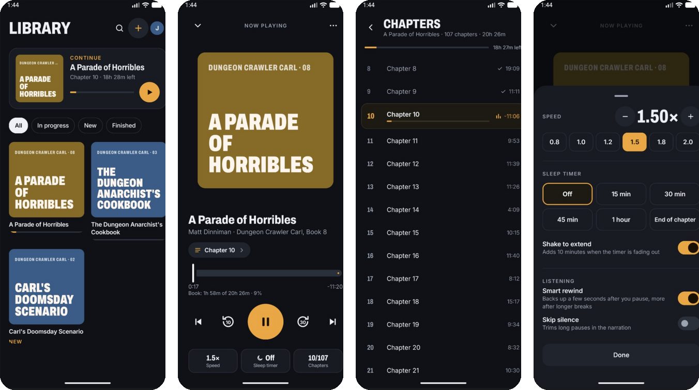

Your audiobooks,
straight from your Drive.
Book Driver is a free, open-source Android audiobook player. Sign in with Google, pick your books, and listen. No uploading, no syncing, no server.
Coming to Google Play.

Streams from Drive
Seeks instantly and caches what you've played, so rewinding doesn't download again.
Real chapters
Read straight from .m4b files, or one per file for a folder of MP3s. Covers and tags too.
Remembers your place
On the phone and in a hidden folder in your own Drive, so it follows you to a new phone.
Built for listening
Speed up to 3×, skip silence, smart rewind, and a sleep timer that fades out and extends with a shake.
Private by design
Sees only the files you pick. No accounts, no analytics, no servers of its own.
Free and open source
Apache 2.0. Read the code, file an issue, or build it yourself.